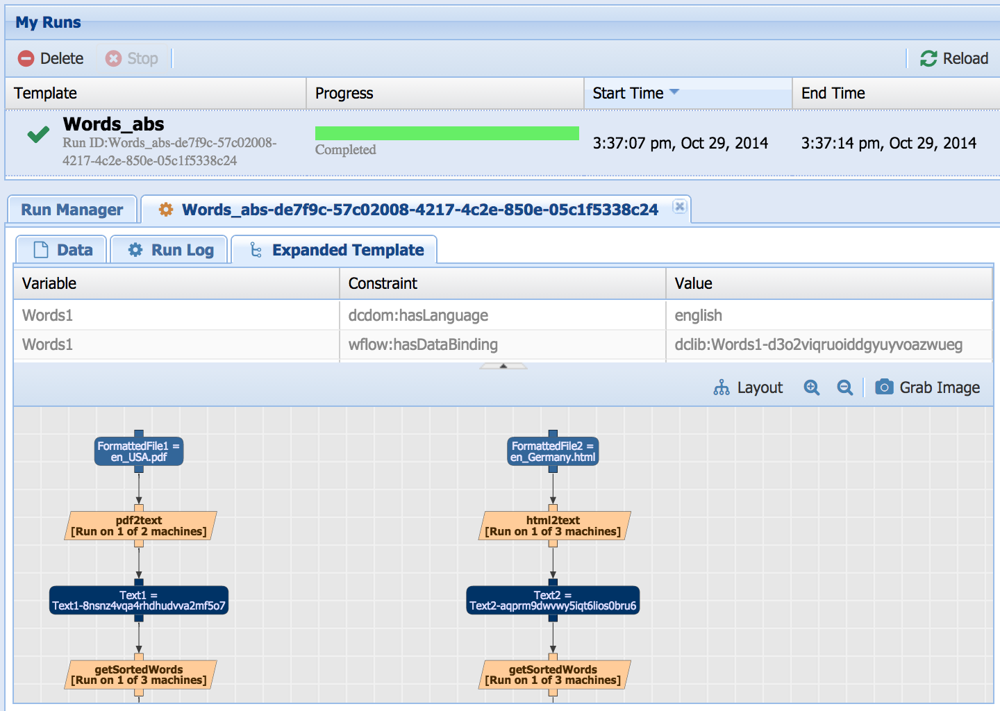
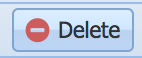
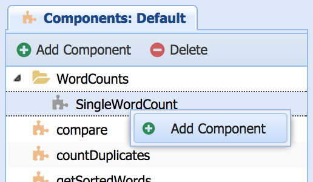
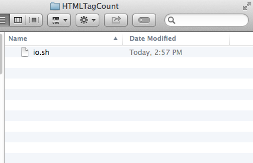
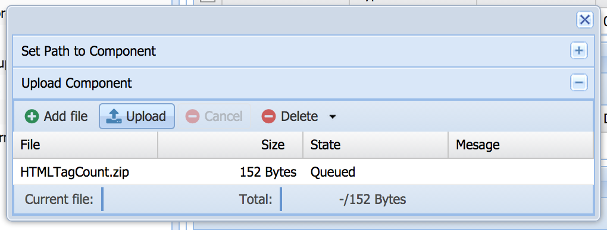
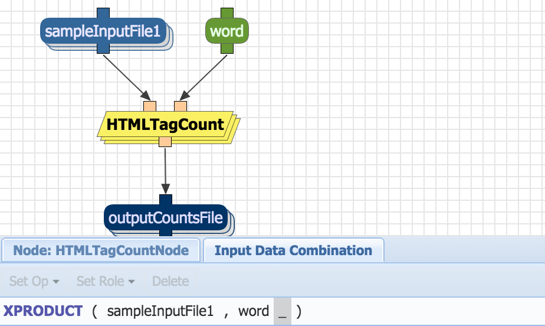
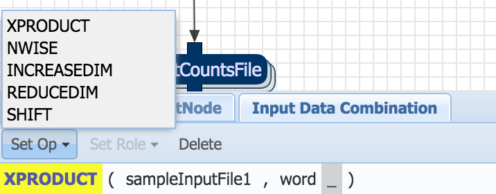
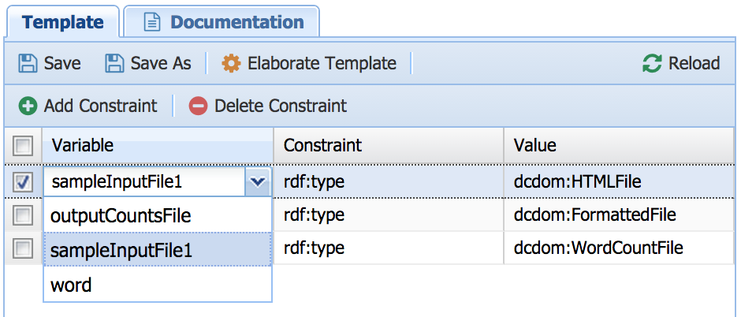
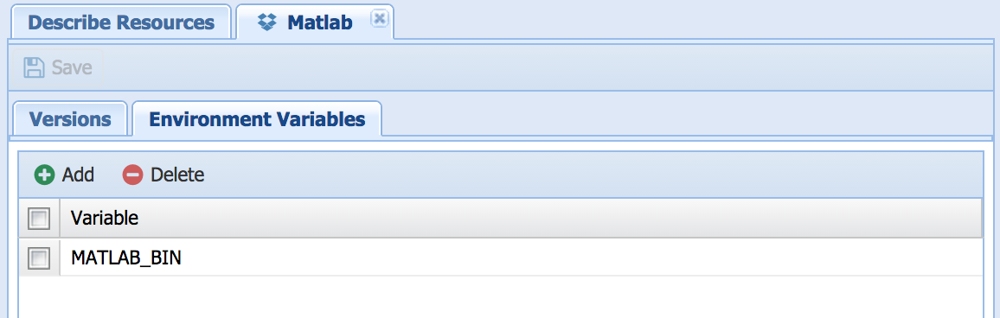
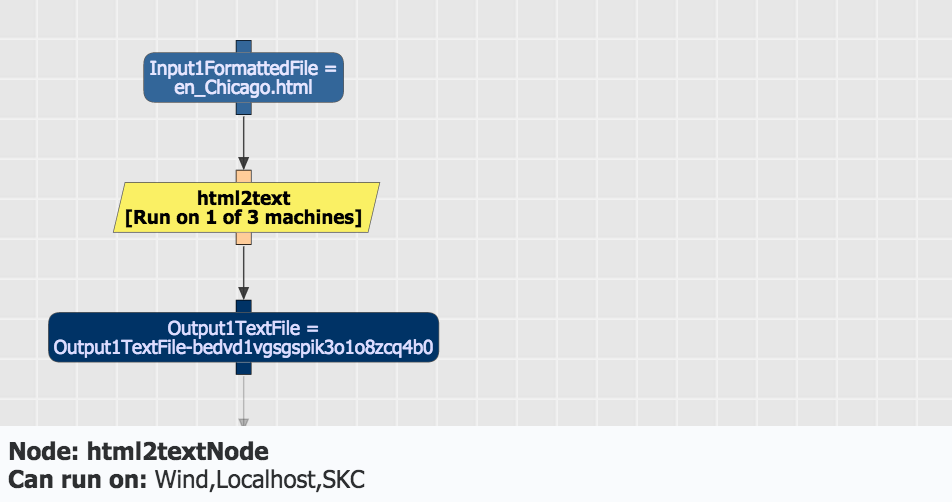

Get WINGS
WINGS Portal
For users that want to browse and execute workflows that are already pre-defined in the system by others. We give you an easy overview of Wings based on a public ''Portal'' (a place to play around). You can also create your own workflows using components that others have already pre-defined. Wings works in the browser, so there is no software to install if you use our web site and you can get started right away.
Installation Instructions
To set up a local portal: Installation Instructions
Workflow Users
1. Getting Started
This tutorial provides a walkthough of unique capabilities in Wings. Wings uses semantic constraints to reason about workflows and as a result it can assist the user to create valid workflows. You can try out for yourself all the examples mentioned in this tutorial. This site is set up with a simple set of workflows and datasets that you can use to test the capabilities of Wings.
1.1. What You Will Learn To Do in This Tutorial
This web site will allow you to experience semantic workflow reasoning first hand through a simple user interface. The site uses Wings, a semantic workflow system with the following capabilities:
- Uses semantic representations to capture complex data analysis routines in a concise form. Reusable workflow descriptions are represented as abstract workflow templates that can be applied to many datasets. There is also a compact representation of parallel computations of many kinds that process collections of datasets.
- Provides interactive assistance by reasoning about those representations. It can suggest parameter values that are appropriate for your data, find relevant datasets, manage collections of data, choose specific algorithms if you only specify a generic class in the workflow, and validate your workflow against pre-defined semantic constraints.
- Automatically generates execution-ready workflows and submits them for execution. In this web site, workflows can be submitted to a shared cluster through the Pegasus/Condor engine. Wings can also generate execution-ready workflows in scripted format for execution in a local host.
It is easy to try things out! You begin by selecting a simple workflow available in our catalog. We have sample datasets that you can use to try out this simple workflow. Once you see how to do that, you can upload your own data and run workflows with it. Skip to the next section if this is all you want to do!
To learn about the unique capabilities of Wings, you will need to use more complex workflows. In the following section of this tutorial, we will walk you through these capabilities with examples:
- assistance in setting up workflow parameters
- assistance in finding relevant datasets
- managing the parallel processing of collections of data
- validating your workflow
- automatically elaborating your workflow from a high level specification
- automatically selecting workflow components
1.2. Terminology and Examples Used in this Tutorial
You can skip this section if you are already familiar with workflow terms. There is a glossary at the end of this document.
The running examples of this tutorial are simple manipulations of data contained in files. There are already workflows and datasets in the site that you can use, so you can quickly get familiar with the system. The workflows process the data for example by counting the number of lines in a file, removing duplicate lines, etc etc.
There are four simple workflows pre-defined in the site, each uses a slightly different approach to count the number of occurrences of words in various files in order to compare the files regarding their topic. The software components that are used as workflow steps are implemented using standard UNIX tools, python, and perl. Intuitively, we use one or more HTML and/or PDF files in a similar topic to generate a simple "topic model" and then apply a distance measure to compare this model to a newly given file.
Workflows manipulate datasets contained in files. In this case, files can be of one of these types: a formatted file (which can be an HTML file or a PDF file), a pattern file (which can be a file containing common words or containing special characters), etc.
Each dataset has associated metadata properties that describe its contents or anything else that is important about the dataset. For example, an HTML file has a size and a language properties.
To view the data and corresponding metadata properties that are used in this site, you can select "Manage Data" under the "Advanced" tab:
We have uploaded a few sample datasets. In the figure above, the "en_Los_Angeles.html" dataset has been selected, which shows that its language is "english", its size is 411610, and its topic is "city". We will see later on how Wings reasons about these properties when the datasets are used in the workflows.
NOTE: Behind the scenes, Wings uses a Data Catalog that contains all this information, and it represents types and properties as OWL ontologies and RDF statements. You will not see any of these ontologies in the interface, but the system uses them to reason about workflows.
We have pre-defined several kinds of workflow components or steps, which are software components that can be executed to process the datasets. Each component has input datasets that it processes, it has input parameters that can configure its function, and outputs that result from its execution. An example is countDuplicates, which takes as input a file of type WordListFile and a parameter that determines a threshold for a minimum set of occurences to be included, and outputs a file of type wordCountFile.
Each constituent of the workflow (i.e., each component, each dataset, and each parameter) has an associated variable, and the semantic constraints refer to these variables to qualify their properties or to state their relationships.
NOTE: Wings accesses a Component Catalog that contains descriptions of all these sofware components that form the workflow steps, their input and output datasets, their input parameters, and how to invoke the code that executes those operations. The descriptions are defined in OWL ontologies and RDF statements. You will not see any of these ontologies in the interface, but the system uses them to reason about workflows.
1.3 Running a Workflow: The Basics
It will take you seconds to run a workflow in Wings and get results. Just follow the guidance in this section.
1.3.1. Viewing a Workflow
You can browse and run workflows that are pre-defined in the system. You do this by selecting "Run Workflows" under the Analysis Tab. There are several workflows that, as we will explain, are different but they all output an assessment of whether a dataset is similar to a given corpus by comparing the amount of words that appear in both. We will look into these workflows in more detail throughout the tutorial.
You can view a workflow by selecting it. If you select the workflow named "English Words" you will see its semantic constraints:
This table shows the semantic constraints on the data variables of the workflow. For example, Words1 has to be of type WordListFile. It also shows that the Words1 should also haveLanguage 'english'.
You will also see a diagram that shows the dataflow among components:
You can find a description of what the workflow does under the "Documentation" tab:
The workflow diagram shows the dataflow among the steps of the workflow. These steps are shown as light orange rectangles. For example, there is a step called html2text, it takes an HTML file as input and it generates a file in plain text without the HTML markup. Each dataset in the workflow has a variable associated with it that is unique within the workflow. For example, one of the input files is called Words1. Datasets in the workflow are shown in blue ovals. Input Datasets are shown in green ovals. Workflow steps can have parameters that control their behavior. For example the countDuplicates step has a Doc1MinLimitOccurances parameter that does not list words in the output that appear less times than the value of that threshold. Parameters also have unique variables associated with them, and are shown as orange ovals.
NOTE: The workflow representations used internally in Wings are more complex than what is shown in the user interface. They are used by the system but we do not explain them in this introductory guide. Please consult our Advanced Tutorial to learn more.
1.3.2 Setting Up a Workflow by Selecting Data and Parameters
When you are viewing a workflow, you will see a set of menus at the top. For each dataset that is input to the workflow, Wings will show you a pull down menu with all the datasets that are of an appropriate type. For each input parameter, it will allow you to specify a value and it will indicate the type expected. If you select an input dataset, it will be highlighted in the workflow view in bright yellow. The constraints associated with it will also be highlighted.
For our example workflow, you will see the following:
Notice that Wings is already helping you by giving you only options for input files that might be appropriate for this workflow by reasoning about types. In this case only html files are offered for selection.
As shown below, Complete all inputs by Selecting from the menus of input files offered. Enter some value for the two parameters, a good value to provide is 3
NOTE: We will see in a later section how Wings can validate your workflow by alerting you of inappropriate parameter settings, and help you by suggesting correct parameters values.
That's it! You are now ready to run your workflow.
1.3.3 Executing a Workflow
Once you have selected input datasets and parameter values, you can select "Plan Workflow" to submit your workflow for execution. To execute the workflow, select the desired workflow you would like to run and select "Run Selected Workflow":
The workflow will run in the background.
You can view the results by selecting the "Access Runs" in the "Analysis" tab. The workflow takes a few minutes to execute. You can refresh the page, and see a report of its progress:
NOTE: Behind the scenes, the workflows in the portal can be executed by a variety of execution engines. For the purposes of the sandbox, they are converted into and executed as a shell script.
1.3.4 Viewing Execution Results
You can view execution results at any time by selecting "Access Runs" in the "Analysis" tab. All the workflows that you have successfully submitted for execution are shown there. For each workflow execution, you can view the results, the logging output, and the workflow used.
In the "Data" tab, you can click on any intermediate and final datasets and view them. You can also see a report of how many times each component was invoked, and how long it took.
In addition, you can save any generated output files back into the data store for later use. To do so click the "Save" link next to the file name. You will be asked to give a more appropriate name to the file. Note that the file will be stored with all the meta-data that Wings has inferred about it! This is one of the distinguishing features of Wings, possible due to the use of semantic annotations and propagation of meta-data properties. So for instance, after executing a very simple workflow that creates a WordCountFile from a TextFile, and saving it back into the data store, when we go back to "Manage Data" (under 'Advanced' tab), we can see the newly created file in the appropriate semantic "folder", "WordCountFile". Note that its meta-data properties are already filled in, as they were inferred by Wings.
2. Semantic Workflows: Unique Features of Wings
So far we have shown how simple workflows can be easily run. What is unique about Wings is that it can represent semantic constraints of workflows and reason about them to assist a user. This section of the tutorial shows several scenarios where you can see these capabilities at work.
2.1 Getting Wings to Help Set Up Workflow Parameters
Wings can propose parameter values for a workflow once you have selected what datasets you want to use. To do this, Wings reasons about semantic constraints that determine the best values of parameters based on metadata properties of the datasets you have selected. Once you have selected the input datasets for your workflow, you can select the "Suggest Parameters"button:
A pop up window shows you suggested parameter values. In this case, there is a constraint that the threshold parameters should be set depending on the metadata property size of the input. If you select a different input dataset, then the system will suggest different values for these parameters. The pop up window offers this explanation highlighted in blue. The explanation also contains other inferences that Wings has made based on propagating constraints throughout the workflow. The suggestions for parameter values often depend on these inferences, which are not part of the semantic constraints table that you see for the workflow.
2.2 Getting Wings to Help You Find Relevant Datasets
You can also ask Wings for suggestions on what datasets to use. Here, we can select input files and ask for suggestions for pattern files by selecting the "Suggest Data"button:
Using a constraint that states that the pattern files must have the same language as the input files, Wings suggests appropriate pattern files from all those available. An explanation is shown to justify why the particular datasets suggested are appropriate. This explanation consists of semantic constraints that have been propagated through the workflow by Wings and that are not part of the semantic constraints table of your workflow description.
2.3 Getting Wings to Manage the Parallel Processing of Collections of Data
Wings can reason about a collection of datasets so that it is processed in parallel by the workflow. For example, if you select the Words Coll workflow you will see:
A multi-layered oval in the workflow diagram indicates that it is a data collection. When you select inputs for this variable, the drop down menu will allow you to select several files at a time. You can see at the bottom of the screen a comment that it is a collection.
Try for example selecting multiple html files, and submit the workflow for execution. When you Plan Workflow, you can see that multiple html2text components are created (in this case we selected 4 files so the component was executed once for each of the 4 files):
NOTE: In this case, the collection of html files is one-dimensional, as it is a list of files. Wings can handle multi-dimensional collections of datasets, as well as collections of workflow components.
2.4 Getting Wings to Validate Your Workflow
If you select input files and parameter settings that are inconsistent with the semantic constraints that are defined in the system, Wings will detect that and let you know that your workflow is invalid. For example, in the English_Words workspace, we mentioned earlier a constraint that the language of the input files and the language of the pattern files has to be the same. If we select files with disparate languages and then we submit this workflow for execution, Wings will inform us that we have an invalid workflow:
Wings can also alert a user if no workflow is possible for the selected input data. In the following example, the file selected in French and there are no pattern files available in that language that could be used:

Wings figures this out based on the semantic constraint for removePattern that its input pattern files have to be in the same language as the input word list files.
This validation capability is very helpful, as Wings is keeping track for the user of all the constraints that are defined in the domain and ensuring that any workflow that a user creates is valid.
2.5 Getting Wings to Specialize an Abstract Workflow
In Wings, workflows can have abstract components that represent a class of executable components. Select for example the "Words Abs" workflow:
The component removeMarkup is a class of components that includes two executables: html2text and pdf2text. Depending on what kind of data is input to the workflow, the appropriate executable will be selected.
Note that this workflow is similar to the Words workflow except it is more general, as it can take in any formatted file (i.e., either an HTML or a PDF File). The "removeMarkup"component is an abstract step, and the system will specialize it automatically as an html Markup removal step or a pdf markup removal step depending upon the type of the input that is given to it.
Try for example an html file and a pdf file, and submit the workflow for execution. When you access the computation results you can see that the html2text component was used for the html file and pdf2text was used for the pdf file

You can also specify components when running a workflow. On the workflow running page, select the abstract component you want to specify. A dropdown will pop up at the bottom of the page that allows you to select the specific component you want to use for the run.
2.6 Getting Wings to Automatically Select Workflow Components
Suppose that we want to process a collection of files, some are in html format and some in pdf. We would like the workflow system to select the right workflow component for removing markup for each of the files according to their format. Wings can do exactly that. For this we need to use the Words_Coll_Abs workflow, and what we want is for the removeMarkup step to be specialized for each component of the collection.
As shown above, try for example an html file and a pdf file as inputs to FormattedFileSet1, an html file as input to FormattedFile2, and submit the workflow for execution. When you access the computation results you can see that the 2 html2text components were used, and 1 pdf2text component was used:
2.7 Getting Wings to Automatically Generate Metadata
Wings can generate automatically metadata properties for new datasets. In order to do this, the input datasets for the workflow must have their metadata properties specified. You can easily upload your own datasets and specify their properties. To do that, select "Manage Data" under "Advanced". Select the type of data that you have, and then select "Upload Files":
Now you can specify the metadata of your dataset. Wings will only ask for metadata properties defined for the type you had selected. For example, for a csv file it will ask for delimiter, language and size:
You can set the properties and click "Save Metadata" to save them
Next, you can write rules for components to generate metadata for outputs. See http://wiki.wings-workflows.org/index.php/Defining_new_Data_and_Componen... for examples.
If you go and select a workflow to run, your new dataset will show up when you select input datasets for workflows. Wings will use them to create metadata properties of new datasets, and also for tailoring its assistance to those properties of your dataset.
3. General Tips
- General
- Name choices: Make sure to leave no spaces in the names of categories, components, data types, file names, etc.. Double check that you do not have an extra spaces before saving. If you get an error message when you try to save your work, it is very possible that you have an extra space.
- Designing ahead: Design the workflow before creating components. This will avoid having to go back and change components and workflows once you have begun creating a new template.
- Documentation: Make sure to provide documentation for both your templates and your components. Proper documentation allows others to follow and reuse your workflows. Description of needed data sets is also important.
- Components
- Changes: If you change a component, and a workflow contains this component, then the workflow must be erased and recreated in order to incorporate the new definition of the component.
- Collections: When using collections of data, remember to specify the dimensionality of the input and output of the component that the data is going in. When you want to create a split component, make sure to change the dimension of the output to 1-D rather than 0-D.
- Data
- Definitions: Define data types before working on component types, because in order to define components you need data types to specify the inputs and outputs.
Workflow Developers
1. Getting Started
Besides running preexisting workflows, you can also create new workflows for you and other users to run.
2. Developing Semantic Workflows
2.1. Managing Domains
-
Open "Manage Domain" page from the Portal Navigation Menu.
-
This is the "Manage Domain" interface.
In here, we can add/delete domains, import/download domains, set the default domain, set domain permissions and other properties.
-
You can only work on one domain at a time.
In order to set the default domain, select the Domain from the list, and click "Use" -
The "CompareFiles" domain as shown below below is now marked as the Default (Is in BOLD)
-
Click on "Add Domain" to create a new domain.
-
Enter the new domain name in the popup window.
-
Click on "Import Domain" to import an existing domain

-
We can either give a pointer to an existing domain Zip file, or upload one. Here we are pointing to a domain zip file present in the wings servers. Other domains can be found here: http://www.wings-workflows.org/domains
-
Select a domain, and click on Execution Engine -> "Local" or "Distributed" to change how it is run. Note, for Distributed Execution Engine, make sure that the distributed "Resources" and machines have been appropriately defined in the "Manage Resources" interface.

-
Select a domain and click on "Set Permissions" to set Domain permissions.

-
In the window that opens, select the users to give permission to. These users will be able to view and edit everything in this domain, as well as being able to run workflows in this domain.
-
Click on "Download" to download the domain zip file. This can be shared with other users.
-
Click on "Rename" to rename a domain.
-
Click on "Delete" to delete a domain.

2.2. Manage Data
Add Datatype, Property
-
Open "Manage Data" page from the Portal Navigation Menu.
-
This is the "Manage Data" interface.
In here, we can add Datatypes, Upload data and add metadata properties.
-
First, select (in yellow) the Parent Datatype for the new datatype that we will create. Here we have selected "TextFile"
-
Click on the "Add" Button, and select "Add Datatype". Alternatively, you can right-click on the parent Datatype and then click on "Add Datatype" menu item.

-
A window will popup asking for the name of the new Datatype.
-
The newly created Datatype "CSVFile" appears.
-
Click on the new Datatype to see it's Metadata Properties. The Metadata Properties are divided into two halves. The top one is editable, and contains the Properties defined for this Datatype. The bottom half is not editable, and displays the properties that are inherited from Parent Datatypes.
-
To add a property for the Datatype, click the "Add Property" button.
-
Here, you can specify the Property, and the Property range.
As of now, the range of the property can only be one of 5 primitive datatypes. -
Then click on "Save" to store the metadata property
-
Select "Manage Data" from the "Advanced" Menu. Select the Datatype from the "Data" section and then click on "Upload Files" button to add new files for the datatype.
-
A Window will appear as shown below.
-
Click on the "Add File" button and select the files for the datatype
-
Click on "Upload" to start uploading datasets.
-
After the upload finishes, close the popup window.
You will see the newly uploaded data under the Datatype for which the data was uploaded. -
Click on the Dataset to see the dataset's Property Grid.
Property values of the Dataset can be edited by clicking on the "Value" column as shown below.Click on "Save" to save the metadata for this Dataset.
Upload Data
2.3. Manage Component Types
-
Open "Manage Component Types" page from the Portal Navigation Menu.
-
This is the "Manage Component Types" interface. In here, we can add abstract component types, and organize them into categories
-
This is the "Add Category" button. Click it to create a new category.

-
A window will popup asking for the name of the new Component Category.
-
The new Category appears under the top-level "Components". If we wanted it under another category, we could've selected it before Adding new Category.
-
New Component types can be added by clicking on the "Add type" button. The Component will become a sub-component of the Selected Component or the Selected Category (if nothing is selected, then it becomes a sub-component of "Components", which is the top-level Category).
Select 'WordCounts' and click on the "Add Type" button.
One can also right-click on the category.
-
A window will popup asking for the name of the new Component type.
-
The newly created Component is shown in the tree under 'WordCounts'
-
Click on "SingleWordCount" to get a view of the UI that appears on the right.
The various tabs for the component type are shown below:

Now this component's IO can be described. -
Click on the "Add" button to add Input Data, Input Parameters, or Output Data.
-
Give a unique name as the argument identifier, and select a type for it.
The dimensionality can be set to 1, in case a single instance of this Component expects an input data collection of unspecified size (like a "merge" step) -
If any input parameters are expected for the component, then click on the "Add" button in the "Input Parameters" section.
Remember to add the datatype, and a default value for the parameter -
Similarly add the output identifiers.
-
Click the "Save" button to save the Component Type Description
2.4. Manage Components
-
Open "Manage Components" page from the Portal Navigation Menu.

-
This is the "Manage Components" interface.
In here, we can add Components and Upload code
-
New components must be added as sub-components of an abstract component (greyed out icon). To add a new abstract component, refer to the tutorial on managing component types. Once you have selected an abstract component, the new component will become a sub-component of the selected abstract component or the selected category.
One can also right-click on the component type
 -
A window will popup asking for the name of the new Component.
-
The newly created Component is shown in "Red". This indicates that there is no code associated with it.
-
Click on "HTMLTagCount" to get a view of the UI that appears on the right.
Now this component's IO (Inputs/Outputs) can be described. -
The Input and Output Data from the Abstract Component appear on the right.
Click on the "Add" button to add more Input Data, Input Parameters, or Output Data. The type of the data can also be specialized. For example, we can change sampleInputFile1 from being a FormattedFile to a HTMLFile -
Before adding code for the component, first add software and hardware dependencies for the component. The list of software dependencies is defined the System Administrator from the "Manage Resources" interface
-
Click the "Save" button to save the Component Description

- There are two ways to put component code into WINGS: writing code in the code editor and uploading code. To use the code editor, select the component from the component tree on the left and then click on the "Code" tab.
- Click on "Initialize" and select a language to create the necessary files to write the code for the components.
- Three files will be created. The run file and bash script should not be modified. Click save to save the newly written code. Only use initialize again if the number of inputs, parameters, or outputs are altered and saved on the "I/O" tab. This will create a new run file to ensure the program runs. The contents of the other files will remain the same if they are saved.
-
Click on "Upload/Set Path" to upload the component package, but first we need to make the Component Package.

-
Download io.sh into a folder named "HTMLTagCount" or click on the io.sh file, copy the contents into a text file, and save it as io.sh.

-
Create a new file named run with the following code (or copy it from the code editor):
On Line 11, . $BASEDIR/io.sh 1 1 1 "$@" indicates that there is 1 Input, 1 Parameter, 1 Output. It reads the inputs and outputs and then finally calls htmltagcount.pl.
It could read differently for a different component, depending on how many inputs (including input parameters) and outputs there are. For example, if there are 2 inputs and 1 output (no input parameters), the file would contain the following code:
If the file is named differently than "htmltagcount.pl", make sure to replace the file name on Line 17, directly after $BASEDIR/".
Examples of line 17 for code in different languages:
- R: R CMD BATCH --no-save --no-restore "--args $INPUTS1 $PARAMS1 $OUTPUTS1" $BASEDIR/htmlTagCount.R
- Java: java -jar $BASEDIR HtmlTagCount $INPUTS1 $PARAMS1 $OUTPUTS1
- Python: $BASEDIR/htmlTagCount.py $INPUTS1 $PARAMS1 $OUTPUTS1
- Perl: perl $BASEDIR/htmlTagCount.pl $INPUTS1 $PARAMS1 $OUTPUTS1
-
Create a new file named htmltagcount.pl with the following code:
In this example, this code is written in a programming language called Perl, so it has the file extension ".pl" The process of uploading and managing components in Wings is the same regardless of the programming language your code is in. Only the file extension and the code in the file created in this step and the file name on Line 17 in Step 6 will change based on the programming language and the code being used.
-
Zip the Component Folder
-
Click "Upload/Set Path"
-
A dialog appears where the path to the component needs to be entered. Click on the "Upload Component" text at the bottom of the dialog

-
The dialog expands. Now click on the "Add File" button
-
Select the component's zip file and click 'Open'
-
The file now appears in the file list. Click on 'Upload'

-
The Component icon turns "yellow" which means that it is a "Concrete" component (i.e. has code and is executable)
2.5. Edit Workflows
-
Open "Edit Workflows" page from the Portal Navigation Menu.

-
This is the "Edit Workflows" interface.
In here, we can create Workflow Templates -
-
A window will popup asking for the name of the new Workflow Template.
-
The new template ("MultiCountWords" in this case) is shown under Templates on the left side of the interface, and the template editor is opened automatically as well on the right in a new Tab.
-
-
The "Components" can be shown in 3 views. The default "Tree" view, which shows the hierarchy of components.
-
The "Inputs" view, which shows components grouped by inputs.
-
The "Outputs" view, which shows components grouped by outputs.
-
Hovering on a component shows it's Inputs and Outputs.
-
To Add a component to the Workflow Template, Drag the component from the left to the checked area on the right.
The icon of the dragging component shows if it is ok to drop or not. Here it shows that it NOT OK. -
As we approach the checked area, the icon indicates that it is OK to drop.
-
After dropping, the component appears in the workflow template. The text is red colored as it's input and output ports (the small rectangular boxes) haven't been connected to variables yet.
The color of the box itself is "light-orange" if this is a concrete component, and "gray" if this is an abstract component. -
You can select the component and move it around.
-
Hovering over a port (the small rectangular boxes) shows information about it. These ports correspond to the component identifiers that were created in the "Manage Components" interface.
-
A Link can be dragged out from the port. While dragging, the "shadow variable" appears like below.
Variables are displayed as ovals.
We can drag this link out to- empty space (which will create a new variable),
- another variable port (which will connect that variable to this port),
- another component port (which will link both components together via a new variable)
-
Data Variables that are Inputs to the Workflow are shown in Blue.
Parameter Variables are shown in Green.
All other variables are shown in Navy Blue. -
Click on "Layout" to connect to Graphviz (if installed) and layout the workflow template. This is useful especially if the graph is becoming quite big and unmanageable.
-
Here the system is trying to connect to "dot". If this doesn't work, make sure that the path to "dot" is correctly specified in portal.properties
-
After laying out
-

-
-
This is the "Elaborate Template" button found above the graph, on top of the "Constraints Table".
Click it to connect to the Wings Semantic Reasoner in order to reason about, validate, and add more annotations to the Workflow. -
Here the system is getting an elaborated workflow from the Wings Semantic Reasoner.
-
A popup window appears after Elaboration.
-
-
If we select a variable, it will show constraints only for that variable. Here the "sampleInputFile1" variable is selected.
The Constraints Table now only shows Constraints for sampleInputFile1 variable.
Also, below the Graph is an editable form that allows changing properties of this variable. -
-
For Inputs to the workflow, we can also indicate whether the Variable should be a collection or not.
-
Collection variables appear as a stack of ovals.
-
Similarly, we can also change properties of the Component by selecting it.
By default "Use all Input Data in same workflow" is set to true. That means if the coming input variable is a collection (or of a higher dimensionality that what is expected), then we should create multiple parallel instances of the Component to handle the input data.
Collection components appear as a stack of rectangles. -
The "Input Data Combination" tab provides an interface to setup the way input data collections are combined and provided to the components using the data.

-
This shows that by default a Cross-Product (XPRODUCT) of all inputs is done. The other combination function is NWISE(i.e. one-to-one match by index). Operations that work on a single port are: Increase Dimension (INCREASEDIM), Reduce Dimension (REDUCEDIM), and SHIFT (i.e. reducing collection size by one and shifting to the left). These single-port operators can be also used as argument to XPRODUCT and NWISE.

-
Here we can select the ports on which the combination function occurs.
-
-
-
-
Constraint items can be edited by clicking on them.
The Variable item shows a drop-down list of the current workflow template's variables.
-
The "Constraint" item shows a list of all constraints that can be specified. This contains some constraints from the "wflow" namespace, and an "rdf:type" constraint. The rest of the constraints from the "dcdom" namespace are the ones that have been described in the "Manage Data" interface.
-
We can set values for Parameter Variables by using the constraint "wflow:hasParameterValue".
First click on 'Add Contraint' button, and then select the variable as word, constraint as 'wflow:hasParameterValue' and enter the value as shown below -
Constraints can be selected by clicking on the checkbox next to them. All constraints can be selected by clicking on the checkbox on top.
-
Click on "Delete Constraint" to delete all selected constraints.
-
-
-
Click on "Save As" to save the current tempate with another name.
-
The "Save As" button can also be used to reuse parts of old templates in new templates. WINGS does not currently allow for copying and pasting parts between workflows, but old parts can still be reused by following these steps:
- Save the old template with the "Save As" button and give the new template a name.
- Go to the new template and delete any components you no longer need.
- Start building from the parts that were kept from the old template.
3. Advanced Features for Developers
3.1. Interleaving
-
While editing a workflow, we can set any output variable to act as a breakpoint, where real metadata will be fetched before planning proceeds. In order for this to happen, a partial workflow will be executed, real metadata will be retrieved, and then planning will happen again. This can happen recursively for multiple breakpoints.
-
Generation of real metadata of an output is left to the component itself. The component must produce a $OUTPUT.met file to specify generated metadata. The .met file format is multiple lines of [metadataProperty]=[metadataValue] pairs for each metadata value. The [metadataProperty] should be a valid metadata property name as defined in the "Manage Data" interface for the output datatype.
-
A breakpoint-ed variable is shown in maroon. (This screenshot is from the "Run Workflows" interface)
-
After planning a breakpoint-ed workflow, in case the .met file for the output doesn't already exist, the planner will show a truncated workflow to execute. The translucent portions are portions of the workflow which might or might not be present in a future plan. The metadata constraints shown here are "predicted" constraints which comes from component rules, and not the real metadata values. Note the value of "hasSize"
-
This is the workflow after it is fully executed, i.e. after partial execution + re-planning + full execution. You can note that the whole workflow is non-translucent here, i.e. the whole workflow has been executed. Also note the value of "hasSize" here which comes from the component itself via the .met file.
3.2. Basic Component Encapsulation
Workflow Administrators
Installation Instructions
If you will be a workflow system administrator and would like to set up Wings on your site (either on a single machine such as a laptop, or on a grid, cluster, or cloud) go to: Installation Instructions
Manage Resources
Add Software and Machines
-
Open "Manage Resources" page from the Portal Navigation Menu. This menu will only be visible to Administrators.
-
This is the "Manage Resources" interface.
In here, we can define Software Resources and Hardware Resources (Machines). -
Select a Software. Here we have selected "Java". This shows the interface to specify what all versions are available for this software.
Another example for Matlab:
-
This is the tab where we can specify what all Environment Variables need to be provided by machines for this software. These environment variables can then be used by Wings Components in their script to ensure portability across machines.

Or for Matlab:
 -
Select a machine. This shows information about the Machine. We should be able to connect to this machine via SSH and SFTP. Therefore we need to provide path to the User private key here. The "Is Healthy" parameter can be turned on or off to make this machine available or unavailable (simulating the health of the machine manually)
-
The Software tab has the interface allows to choose the Installed Software for this machine.
-
We can also specify the software environment variable values that are valid for this machine (i.e. where the software is installed on the machine)
-
In the component definition (Manage Components), we should specify the minimum software version that is required by the component. This software should be defined as mentioned above.

-
In "Manage Domains", we should set the execution engine for the domain to be "Distributed".
-
In the "Run Workflow" interface, after planning a workflow, the Executable Workflow shows the set of machines that the component can be executed in. Before running each component, the system chooses a healthy machine from this set at random.

-
The Run log in the "Access Runs" interface will indicate that the component was run remotely (assuming the Local machine wasn't chosen at random from the set of valid machines).
Setting up Distributed Execution
Manage Wings Users
-
Open "Manage Users" page from the Portal Navigation Menu. This menu will only be visible to Administrators.
-
This is the "Manage Users" interface.
In here, s and delete Users. We can also define some users to be admins, and set their names. -
Select a User. The interface shows the User details on top, and the user activity below
-
Click on the Edit button to edit user details.
-
Set the User details. Select the "Is Admin" field to set the user to be an administrator. Then click the Save button
Glossary
This is a brief glossary that describes the terms used in Wings manuals and tutorials. Note that the same terms may be used differently in other systems.
Abstract Workflow -
A workflow whose computations are not fully specified. An abstract workflow 1) may contain abstract steps (i.e., some steps may represent a class of components), 2) may be missing steps and dataflow links (i.e., only specify some of the steps in the workflow), 3) may contain descriptions of the types of data products desired. An abstract workflow can be used as a starting point to automatically generate an execution-ready workflow through workflow elaboration.
Component - See workflow component.
Component Catalog -
A catalog that contains unique identifiers of executable software components or component classes available to the workflow system as workflow steps, together with descriptions of each component in terms of semantic constraints that restrict 1) the characteristics of its input datasets, 2) the appropriate values of parameters for given input data, 3) the required characteristics of input datasets given specific parameter values, 4) the required characteristics of input datasets and appropriate parameter values to generate a required kind of result.
Component collection -
A collection of computations grouped according to some property or criterion and to be processed either within a workflow through parallel computations or by several workflows each processing one item of the collection.
Data Catalog -
A catalog that contains unique identifiers of datasets available to the workflow system, together with descriptions of each dataset in terms of its metadata properties.
Data Types -
Data types have to be made in order to add properties to data. After assigning properties to data types, property values can then be assigned to the data under it. Components must input and output certain data types. Properties of data describe the content of the data file, and examples include size, date, and format (i.e. integer, float, string, etc.).
Dataset -
A file that contains data to be processed by workflow components.
Input datasets are input to a workflow, final datasets are the final results of a workflow, and intermediate datasets are any datasets obtained during workflow execution that are not final results sought by the user. Datasets have associated metadata properties.
Data collection - A collection of individual datasets grouped according to some property or criterion and to be processed by a workflow through parallel computations when possible. Data collections may be nested, so can parallel execution paths in a workflow.
Dimensionality - Data can have characteristics such as length, width, depth, and time, all of which give the dataset dimensionality. Each of these elements gives a dataset an additional dimension. Although colloquial English suggests that there is a specifically numbered dimension that corresponds with each of the examples listed above (e.g., time is the 4th dimension), this is not the case in data science. For example, if you have measurements from a sensor over time but do not have the longitude, latitude, and altitude of the sensor, the data is only one-dimensional because it extends in only one direction (time).
A common application of dimensionality in WINGS is for split components. Split components take larger dataset and split it into smaller datasets based either on size or some other element. If the input data is 0-D before the split, the output is now 1-D. Splitting the data extends the data in another direction, thus increasing its dimensionality.
Domain - Domains serve as workspaces in which you can organize your projects. Creating different domains for various tasks helps to prevent confusing components and makes elements of the workflow easier to find. Domains can be thought of as analogous to windows within a web browser and related templates are like related tabs within a window.
Executable component - See workflow component.
Execution-ready workflow -
A workflow that is fully specified at the application level and can be submitted to a workflow mapping and execution engine. To be fully specified at the application level the workflow must have: 1) all input datasets bound to an existing dataset, 2) all parameters bound to a specific value, 3) all workflow steps must be executable components.
Metadata property -
A property of a dataset, which is represented explicitly and separately from the data itself. Examples of metadata properties may be the type of data, the size of a dataset, statements about the methods used to obtain a dataset, and accuracy measurements.
Parameter -
An input to a software component that enables configuring it to obtain different results. Examples of parameters include a threshold value, the number of iterations within the component, and filtering criteria. Parameters are treated differently from datasets as the nature of the input datasets to the component often determines what parameter values are more appropriate.
Parameter Type -
The parameter type specifies what values are possible for the parameter. The paramter types available in WINGS include string, boolean, int, float, and date.
- string: a collection of characters such as "female," "abc123," or "Smith"
- boolean: a true or false statement that is typically coded in 1's (true) and 0's (false)
- int: an integer, a whole number without decimals
- float: a number that may include decimal points
- date: month/day/year
Port -
Ports describe the inputs and outputs of components. In a valid workflow they are linked to data variables. In the editor, input (resp. output) ports appear as little boxes above (resp. underneath) the component.
Variable - See workflow variable.
Workflow -
A workflow represents a complex computation declaratively as a set of software components and their data flow dependencies. In some cases a workflow also contains control flow dependencies. Workflows are often diagrammed as a graph whose nodes are the computations (the software components) and the links reflect the dataflow. See workflow template, execution-ready workflow, and abstract workflow.
Workflow component - A workflow component can be used as a step in the workflow. It is either 1) an executable software component that is encapsulated and can be directly executed, or 2) a class of software components (also called an abstract component) whose instances are executable software components.
Workflow elaboration -
The process of taking an abstract workflow and generating an execution-ready workflow.
Workflow step - See workflow component.
Workflow system -
Workflow systems exploit workflow representations in order to manage the elaboration and execution of
workflows that process very large datasets in a distributed environment.
Workflow template -
A workflow that has one or more unspecified inputs and therefore is has more generality than a fully specified workflow that only applies to its defined inputs. Workflow templates are more reusable than fully specified workflows. To execute a workflow, a user can take a pre-defined reusable workflow template from a library and then specify the inputs of interest.
Workflow variable -
Wings assigns a unique variable to each component, dataset, and parameter of a workflow. These variables are used to assert semantic constraints. A data variable is a variable associated with a dataset. A parameter variable is a variable associated with an input parameter of a component of the workflow.